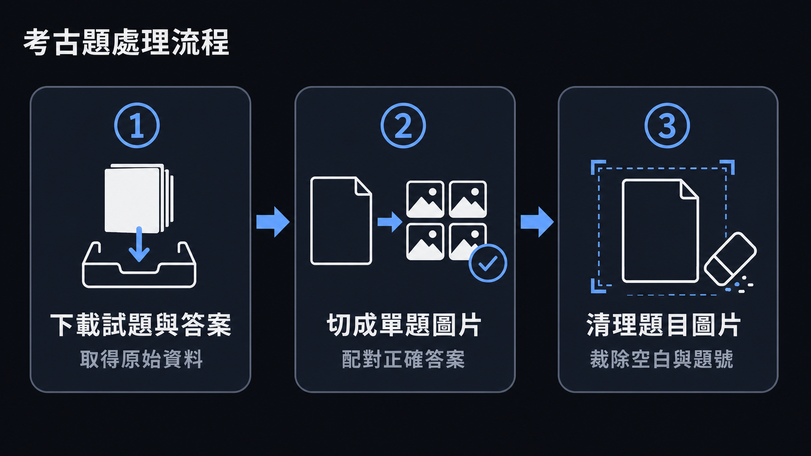
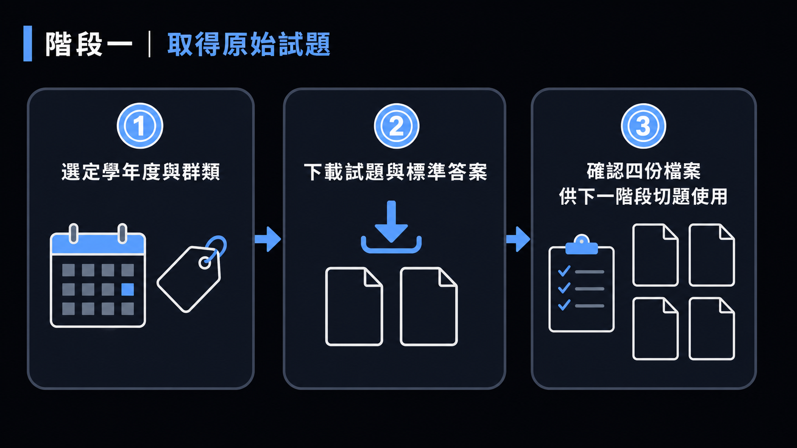

這份教學帶你跟著做一次「PDF 考古題 → 一題一張乾淨圖片 ＋ 標準答案 JSON」的完整流程。你不需要自己寫程式，每個步驟都只要在 Codex 對話視窗裡用自然語言下指令即可完成。
本教學對應 module2/ 資料夾，裡面已經有兩組完整跑過的範例資料，你可以隨時打開來對照「正確結果長什麼樣子」。如果想跳過下載階段直接練切題，也可以下載 module2-raw.tar，解壓後會得到 raw/115/、raw/math-115b/ 這兩組原始 PDF。
| 範例資料 | 試題來源 | 已下載的 PDF | 已切題＋清理完成的成果 |
|---|---|---|---|
| 115 學年度 電機與電子群資電類 專業科目(一)(二)，共 100 題 | 從零下載示範 | module2/raw/115/ | module2/repo/115/ |
| 115 學年度 數學(B) 共同科目，共 25 題 | PDF 已在手示範（不用下載） | module2/raw/math-115b/ | module2/repo/math-115b/ |
做完這份教學，你應該能夠：
這三個工具都是工作坊講師事先寫好的 custom skill（一份說明文件 SKILL.md，加上對應的腳本），放在這個專案的.claude/skills/資料夾底下（不是 Codex 原生內建的功能）。跟 Codex 對話時，把你要做的事講清楚，並提一句「可以參考.claude/skills/底下對應的工具」，讓 Codex 自己去讀說明、決定怎麼用；如果它沒有主動找到，也可以直接請它打開指定的SKILL.md看說明。
整個流程分三個階段，前一階段的輸出就是下一階段的輸入：
| 階段 | 在做什麼 | 輸入 | 輸出 | 對應 skill |
|---|---|---|---|---|
| ① 下載 | 抓試題＋標準答案 PDF | 學年度、群類 | raw/<year>/*.pdf | download-exam-pdf |
| ② 切題 | 把 PDF 切成一題一張圖，配對答案 | ①的 PDF | repo/<name>/*.png ＋ keys.json | slice-exam-pdf |
| ③ 清理 | 裁掉多餘空白、塗掉題號 | ②的 png | 原地覆寫、變乾淨的 png | clean-exam-question-images |

兩組範例資料剛好示範了兩種起點：115 學年度電機與電子群資電類是「從零開始」，三個階段都跑過一次；115 數學(B) 則是「PDF 已經在手上」，直接從步驟二開始 這是因為 download-exam-pdf 這個工具目前只認得「專業科目(一)(二)」，抓不到數學這種共同科目，這一點在步驟一會再說明。

這一步的產出，是接下來切題階段要用的原始 PDF。如果你手上已經有 PDF 了（例如老師自己保存的考古題），可以直接跳到步驟二。
目前的能力邊界：download-exam-pdf 這個工具目前只認得成績單頁面上「專業科目(一)」「專業科目(二)」這兩個列標籤，抓不到「數學(A)/(B)/(C)」這類共同科目 這正是範例資料裡數學(B)直接跳過這一步、從切題開始的原因。如果你要練習的是共同科目，請自行到網站上手動下載 PDF，再從步驟二開始。
請到技專校院入學測驗中心的網站，幫我下載 115 學年度統測「電機與電子群資電類」的資料。
我只需要專業科目(一)、專業科目(二)的試題，還有這兩科的標準答案。
下載好之後存到 module2/raw/115，檔名保留系統原本的命名方式。產出：module2/raw/115/ 底下會出現 4 個檔案：115專業一試題.pdf、115專業一答案.pdf、115專業二試題.pdf、115專業二答案.pdf。
"AD"）收進去，但值得事後對照原文確認有沒有真的收進表格。這一步把整份 PDF 切成一題一張的 PNG 圖片，並且對照標準答案 PDF，做出一份「圖片檔名 → 正確答案」的 JSON。
請幫我把 module2/raw/115 底下 115 學年度試題 PDF，每一題切成一張圖片，
檔名用 module2/repo/115/115專業<1或2>Q<題號>.png。
再對照標準答案 PDF，做出 module2/repo/115/115keys.json，
key 要跟圖片檔名完全一樣（含 .png），value 放正確答案字母。產出：module2/repo/115/115專業1Q1.png ～ 115專業1Q50.png、115專業2Q1.png ～ 115專業2Q50.png，加上一份 115keys.json，內容像這樣：
{
"115專業1Q1.png": "B",
"115專業1Q10.png": "B",
"115專業1Q11.png": "A",
...
}共同科目考卷通常是 25 題，不是 50 題，記得跟 Codex 說清楚正確題數；另外 slice-exam-pdf 的輸出檔名固定寫死「專業」兩個字，即使科目代號換成字母也一樣，所以切完數學卷之後，檔名還是會叫 115專業BQ<n>.png，要請 Codex 另外改名成 115數學BQ<n>.png，keys.json 裡的 key 也要同步改。
請幫我把 module2/raw/math-115b 底下的 115 學年度數學(B) 試題 PDF 切成一題一張圖片，
這科是共同科目，只有 25 題，科目代號用 B。
輸出檔名請直接用 115數學BQ<題號>.png（不要用預設帶的「專業」字樣），
再對照標準答案 PDF 做出 keys.json，key 要跟檔名一致（含 .png），存到 module2/repo/math-115b。keys.json 的筆數要一樣多。切出來的圖片下緣常常會多留一小段空白，甚至帶到下一題的一小段殘影；題號（像「50.」「11.」）也還印在題目最前面。這一步做兩件事：
這兩段清理邏輯是直接寫給 Codex 讀取後即場執行的，所以這一步一定要透過 Codex 對話來做。
對 module2/repo/115 資料夾裡的每張 *.png：
1. 裁掉下面多餘的空白（含「以下空白」殘影），但不要裁到真正的內容。
2. 清掉題號（像「50.」「11.」），但 (A)(B)(C)(D) 選項不要動。
執行 Pass 2 之前，先「乾跑」一次，把每張圖偵測到的題號區塊印出來讓我看過，
確認每張圖都剛好抓到 1 個題號區塊之後，才正式塗白存檔。為什麼一定要先乾跑：Pass 2 判斷「這是不是題號」用的是像素座標的門檻值（例如題號要在 x≤220 開始），這組門檻是針對這個考卷範本量身調校的。萬一某一年、某一科的版面跟預期不同，門檻可能會抓錯 乾跑只印出偵測結果、不會真的動任何像素，讓你能在「真的塗白存檔」之前先發現異常，避免一次做壞整批圖片。
slice-exam-pdf 重新切那一題，而不是在清理階段硬加規則修。看懂範例之後，換你自己動手跑一次。建議照下面兩種難度挑一種：
如果你手邊已經有其他學年度或科目的 PDF（例如之前下載過、或同事給的），可以直接拿來練切題＋清理兩個階段，跳過下載步驟，輸出到一個新資料夾，不會動到 module2/ 裡已經驗證過的成果。比照步驟二，請 Codex 把試題切成一題一張圖片，輸出到 module2/repo/114-practice 這類新資料夾；切完之後，比照步驟三，請 Codex 對這個資料夾執行清理（記得先乾跑）。
換一個你自己感興趣的學年度或群類，從步驟一的下載開始，完整跑過三個階段。建議先請 Codex 用「乾跑」模式確認群類名稱有比對到，再正式下載，避免白跑一次網路請求。
module2/repo/115、module2/repo/math-115b），看看「正確結果」長什麼樣子。| 狀況 | 代表什麼 | 該怎麼做 |
|---|---|---|
| 下載到的 PDF 打開一看，群類或科目跟預期不同 | 下載時比對到的群類、科目名稱有誤 | 請 Codex 開啟 PDF 肉眼核對，確認無誤才繼續下一步 |
共同科目（數學 A/B/C）沒辦法用 download-exam-pdf 下載 | 這個 skill 目前只認得「專業科目(一)(二)」的列標籤 | 自行取得 PDF，直接從步驟二切題開始 |
| 切完題後檔名裡有「專業」兩字，但其實是數學科 | slice-exam-pdf 的輸出檔名固定寫死「專業」，不會因為科目代號換成字母而改變 | 請 Codex 改檔名＋同步改 keys.json 的 key，再進清理階段 |
| Pass 2 乾跑時某張圖出現 0 個或 ≥2 個題號區塊 | 版面跟預期範本不同，或門檻誤判 | 先停下來人工檢查那張圖，不要直接跳過或硬套用 |
| 清理完後某張圖底部還留一整行不相關的文字 | 這是切題邊界的殘影，不是單純的空白或雜訊 | 回頭用 slice-exam-pdf 重新切那一題，不要在清理階段加規則硬修 |
| 想把 Pass 2 的 gap 門檻從 14 調小一點（例如 10） | 兩位數題號（如「11.」）本身兩個數字間距就可能到 10px | 門檻維持 14，往下調會把兩位數題號誤判成只清一半，留下殘影 |
清理乾淨的圖片＋keys.json，就是後續「自主練習小工具」要用的原始素材 下一步可以把 module2/repo/<name>/ 這個問題集資料夾，交給 build-quiz-app 這個 skill，產生一個不用架站、雙擊就能打開的學生自我測驗網頁與教師端 CSV 彙整頁面。
想看已經做好的成果長什麼樣子，可以參考 Module 4 對應的 module4/app/ 底下用同一套流程產出的測驗頁面。